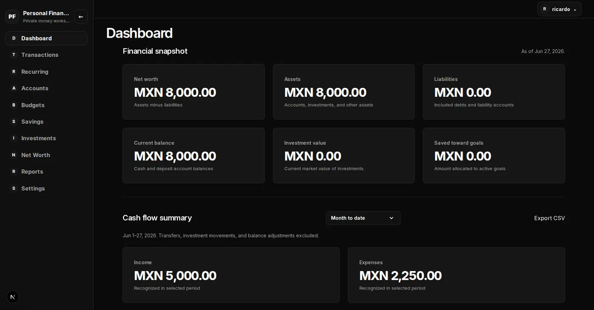
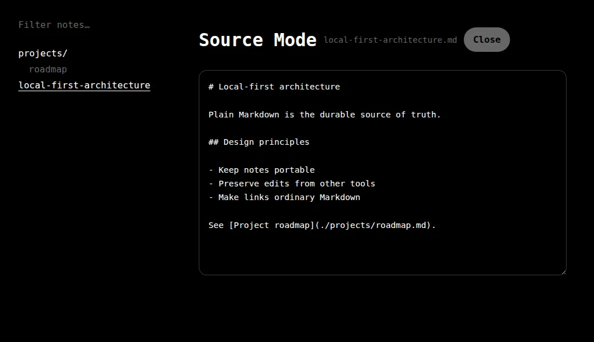

A closer look at the product decisions, implementation details, and lessons behind selected projects.
01 / Flagship case study
Personal Finance
A private workspace that turns scattered financial activity into a clear view of cash flow, plans, and net worth.

Authenticated dashboard with current-state and period-based financial indicators kept deliberately separate.
The problem
Financial decisions are harder when each part of the picture lives somewhere else.
Income, expenses, budgets, savings, investments, and liabilities all affect one another, but tracking them separately makes it difficult to understand current position and period activity without rebuilding the same picture by hand.
The delivered solution
One authenticated workspace for recording activity, planning ahead, and reading the whole financial position.
As the repository’s sole contributor, I defined the product language and built the application across accounts, transactions and transfers, budgets, savings goals, investments, net worth, recurring activity, reports, CSV import and export, and user preferences. The dashboard separates the latest financial snapshot from activity in a selected period, so a date filter does not quietly change values that represent the present.
Correct financial boundaries before convenient abstractions.
01
Keep authorization next to the data
Authenticated Supabase clients preserve the user identity for PostgreSQL Row-Level Security. A privileged server client is narrowly limited to persistent rate limiting rather than user-owned finance data.
02
Store and calculate money exactly
PostgreSQL numeric values cross the persistence boundary as decimal text, while fixed-point application calculations avoid JavaScript floating-point arithmetic until an explicit presentation boundary.
03
Own the interaction boundary
Semantic HTML, native forms, Server Actions, and an application-owned CSV boundary provide accessible controls and authoritative server validation without adding component and form libraries that did not solve a concrete gap.
04
Apply filters only where they are truthful
Report filters affect only data with the matching dimension. For example, a category cannot imply a change to net worth, and a date range cannot pretend current investment valuations are historical snapshots.
Outcome and lesson
A tested foundation whose product rules can be checked, not just described.
The result is a private application with automated coverage at unit, browser, database, authentication, storage, and cross-user authorization boundaries. The lasting lesson was that finance software becomes easier to extend when terms such as current balance, net cash flow, transfer, and reporting currency have explicit definitions shared by the interface, calculations, and persistence model.
02 / Desktop application
Local Notes
A focused desktop writing space that keeps ordinary Markdown files, not an application database, as the durable source of truth.

Source Mode makes the storage model visible: the note remains readable Markdown in a normal folder hierarchy.
The problem
File ownership and a polished writing experience should not be opposing choices.
Writers who value portable local files often have to accept a thin editing experience, while richer tools can make an account, database, or proprietary workspace the real home of their notes. Local Notes explores a third option: focused writing without surrendering the underlying files.
The delivered solution
A Markdown canvas whose conveniences can always be rebuilt from the Notes Folder.
I built the Electron filesystem and IPC layers, CodeMirror writing surface, raw YAML frontmatter editing, folder navigation, search, backlinks, standard Markdown link autocomplete, autosave, recovery, and external-change handling. Notes are discovered recursively from a selected folder and identified by relative paths; search and relationships are derived from those files instead of a durable app-owned index.
Treat interoperability and recovery as core product behavior.
01
Let paths carry identity
Relative Note Paths replace generated record IDs, and the fast [[ input flow saves ordinary relative Markdown links. Renames retarget incoming links so filesystem organization does not quietly break navigation.
02
Protect work before and after a file exists
Untitled prose is recovery-backed while it waits for timed note creation. Existing notes use debounced saves with expected-content checks, while external edits either reload safely or become an explicit conflict instead of a silent overwrite.
03
Keep desktop privileges behind a narrow boundary
Filesystem access stays in Electron’s main process behind a typed preload bridge, with context isolation, no Node.js integration in the renderer, and managed-path validation at the file boundary.
04
Choose the editor for the interaction model
The writing surface moved from a WYSIWYG-oriented editor to CodeMirror when visible Markdown structure became central. A separate Source Mode still exposes the complete file, including frontmatter.
Outcome and lesson
A tested writing workflow that remains useful outside the application.
The application covers writing, metadata, search, links, recovery, external changes, and packaged desktop behavior with automated tests. The central lesson was that “local-first” takes more than removing a database: the software must preserve unknown file content, coordinate with other editors, and keep every convenience subordinate to the user-owned files.
03 / Browser application
Pomodoro Timer
A glanceable interval timer designed to keep Work Sessions, recovery breaks, and restored browser state predictable.
The ready state exposes the full cycle without hover: Work, Short Break, Long Break, progress, sound, and Interval Configuration.
The problem
A simple countdown becomes unreliable when time, cycle rules, and browser state disagree.
People using focused intervals need to see what kind of session is active, trust pause and resume behavior, understand when recovery changes from a Short Break to a Long Break, and return after closing the page without losing an in-progress cycle.
The delivered solution
A complete Pomodoro cycle that prepares the next interval without taking control away.
I implemented Work Session start, pause, resume, reset, and completion behavior; Short Break and Long Break transitions; and Interval Configuration for all three durations plus the long-break threshold. Completed Work Sessions advance the streak and prepare the appropriate break, but the next interval waits for the user. Versioned browser persistence restores configuration, progress, and a running deadline, including completion that occurred while the page was closed.
Make time-dependent behavior explicit, restorable, and accessible.
01
Store a deadline, not a ticking counter
A running interval records an absolute target time. The interface derives remaining time from the clock, so delayed renders do not create cumulative drift and closed-page recovery can determine whether the session finished.
02
Separate cycle rules from React
Pure TypeScript transitions own completion, break selection, configuration validation, and local-calendar progress. React dispatches those transitions and renders their state, keeping timer rules directly testable.
03
Communicate state through more than color
Native controls, visible labels, pressed states, contextual accessible names, polite live status messages, strong keyboard focus, and reduced-motion styles support operation without relying on the session palette alone.
04
Check the storage envelope before loading
Browser storage checks the schema version, recognized session and status values, configuration ranges, remaining time, and progress fields before loading. Unparseable or rejected data falls back to the default timer state.
Outcome and lesson
A functioning, tested cycle that can recover from an interrupted browser session.
Automated tests cover Work Session controls, Short Break and Long Break selection, configuration validation, persistence, daily progress, and recovery after the deadline passes while the page is closed. The durable lesson was that separating transition rules from presentation and persisting an absolute deadline makes timer behavior both easier to verify and more trustworthy to restore.
Professional Experience
Experience
Professional work across web platforms, system integrations, and industrial automation, focused on making operational tools more reliable and useful.
Beracah Médica
Software Engineer
– Present / Hermosillo, Sonora
Develop and integrate commerce systems that support the company’s day-to-day sales, pricing, and product operations.
Adapted Odoo’s checkout flow to the company’s operating model and customized the storefront to support its brand and customer experience.
Built Odoo modules that update product fields from spreadsheet data and streamline internal workflows.
Contributed to the Magento 2 to Odoo Enterprise migration, mapping 301 redirects to preserve existing routes and search traffic.
Integrated a serverless AWS API with Odoo to retrieve exchange rates and deliver updates through Slack.
Coinsamatik
Application Engineer
– / Hermosillo, Sonora
Programmed and commissioned industrial control applications that connected equipment, operator interfaces, and production data.
Built a C++ application that used a PLC, HMI, and flowmeter to create production files and send their data to a server.
Helped install, program, and commission 30 variable frequency drives controlled through an HMI for a fish cooker.
Developed a PLC and HMI totalizer application to visualize flowmeter data from a pipeline.
Installed and configured a drive with PID control to regulate pressure in a golf-course irrigation pipeline.
Demonstrated Capabilities
Skills & Technologies
Tools and practices used in professional work and the selected projects above, grouped by the problems they help solve.
Product & interface
React
Next.js
Electron
HTML
CSS
Accessibility
Application & data
Python
TypeScript
JavaScript
Node.js
PostgreSQL
Supabase
Platforms, delivery & verification
Odoo
Magento 2
AWS
Docker
Git
GitHub Actions
Vitest
Playwright
Industrial systems
C++
PLCs
HMIs
Variable frequency drives
PID control
A Little More About Me
About Me
I’m a software developer and mechatronics engineer based in Hermosillo, Sonora. I enjoy turning complex workflows into clear, user-focused applications.
My work spans web development, systems integration, and industrial automation. I approach each project with practical problem-solving, continuous learning, and a focus on reliable software that people can understand and maintain.
Start a Conversation
Let’s Work Together
Have a project, product challenge, or role where thoughtful software can make a difference? I’d be glad to hear about it.